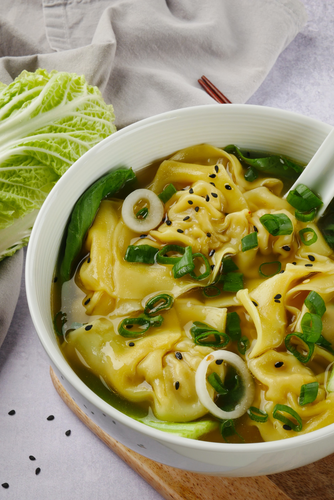
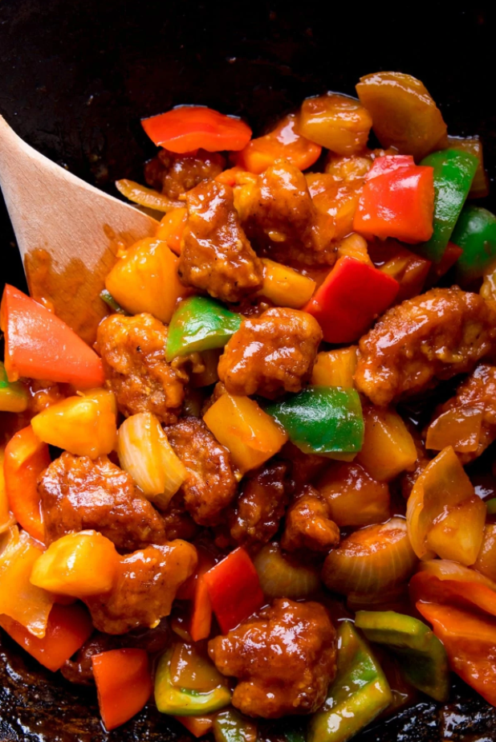
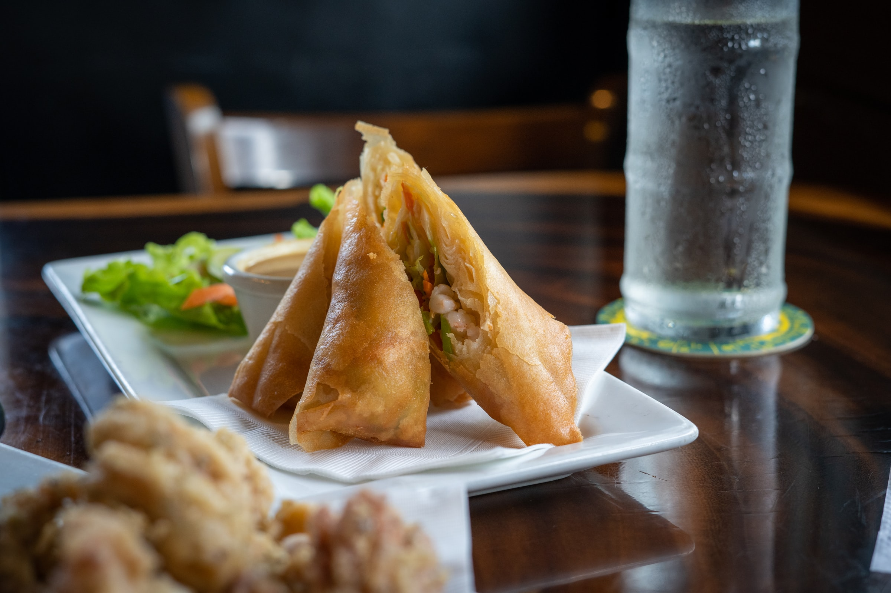

Top 3 China Cuisines!
1. Wonton
Wonton is a traditional snack originating in the North of China. They are also popular in the south. Even its name “wonton” comes from Cantonese. With a variety of packaging, fillings, and cooking methods, wonton has all kinds of local flavors. In Northern China, wonton is always filled with celery (or cabbage) and minced mutton (or beef or pork). In the Guangdong area, wonton is usually stuffed with shrimp and minced pork and is served with noodles to make wonton noodles. In Hong Kong, wonton is fried in hot oil until it becomes golden and crispy, called “Fried Wonton”. In the Fujian area, wonton is served with a light soup.
2. Sweet and Sour Pork
Sweet and Sour Pork is one of the classics of Chinese cuisine. No one can reject its sweet and sour mix flavor and bright appearance. Some people don’t eat pork, so some restaurants change it to Sweet and Sour Chicken, which shows how adorable its taste is. The dish is particularly popular in the Shanghai area.
3. Spring Rolls
Spring rolls are fried pancakes with different fillings in south China. Those from Shanghai and Guangdong are the best known. The name is intrinsically linked to the Chinese New Year. In the past, the Chinese had the custom of having spring rolls to mark the end of winter and the beginning of spring. The filling can be either sweet or savory depending on your preference. For a sweet filling, sweetened bean paste is a good choice. For a savory one, Chinese cabbage and shredded pork are particularly popular, while shredded bamboo shoots and mushrooms can be added for good measure. The skins of perfect spring rolls should be crispy, and the filling tender.